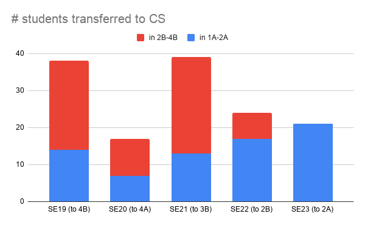
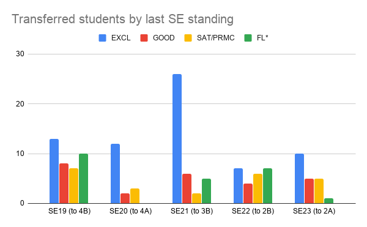
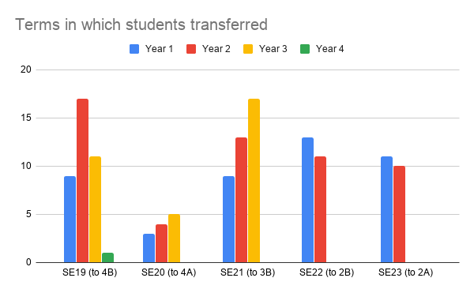

Author: Patrick Lam
Waterloo's engineering programs, including Software Engineering, were visited by a Canadian Engineering Accreditation Board visiting team in mid-November. SE had a helpful visitor and we don't think there will be substantial SE-specific concerns in the final report. There are two issues that we need to address.
a) There should be measurement of project management indicators as performed by SE students in the context of the Capstone Design Project.
b) CEAB requires a certain amount of teaching of Engineering Science and Engineering Design by licensed Professional Engineers. Due to a measurement artifact, SE is below the minimum as counted by CEAB. No actual SE cohort in the past few years or in the next few years will graduate with less than the required teaching. The visitor was receptive to this line of reasoning but it's not the official CEAB position. We'll see what the final report from the CEAB says.
Many core SE faculty from CS are licensed professional engineers.
The next steps are that there is a report from the CEAB and a response from us, around February. This is followed by an accreditation decision.
It feels like a lot of students are transferring out of SE this term. This fall's number is 17 across all levels:
SE 2021: 3 SE 2022: 4 SE 2023: 10
However, things have changed on the CS side, in that students must complete two terms in satisfactory standing before they can transfer. So 2A is the earliest they can transfer.
I've brainstormed with the SE team, current students, and alumni, and I've surveyed students: see attachments, and an attitudinal survey.
I decided to explore the data more thoroughly and collected transfer stats going back to Fall 2014. The best comparison is between this year's 2A and previous years' 1A-1B-2A numbers, of students in satisfactory standing.
2019 2020 2021 2022 2023
up to 2A 14 7 13 17 21
We can see an upwards trend. The total number of transfers from SE 21 is highest, but they've also had more time to think about transferring than SE 22 and SE 23.
In which term did students transfer? Recently we've seen slightly more transfers after 1B than in second year. SE 19 had the most students transfer in second year compared to third and fourth, while SE 21 has many third-year transfers.
I also gathered data on how students were doing in SE before transferring. It turns out that almost always a plurality of transferring students left SE in EXCL standing (previous term average at least 80%). SE 19 had a number of students transferring after FLR (under 59.5% term average: failed - required to repeat term) standings, but this is now much less common. I don't think students' averages generally shift much post-transfer.
At the curriculum level, we are exploring additional flexibility that we might be able to add to SE. At an operational level, we'll just continue to provide strong support for students and work with the SE Society on student well-being.
  